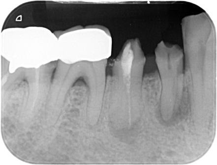

風格 B — 深色精緻（含圖片）
X 光圖直接嵌入筆記 · 深色底圖片對比強 · 最適合放射線科
根管解剖
Vertucci 分類
各齒根管數量
工作長度測量
根管診斷
電髓測試
冷熱診斷
根管清創
NaOCl 沖洗
器械選用
根管診斷臨床案例
必考📷 臨床放射線影像判讀
以下為歷屆國考實際出題影像：

111-1 第4題 · 牙髓壞死合併根尖病灶

113-1 第24題 · 根尖周圍診斷
X 光判讀要點
| 正常根尖 | 根尖周韌帶空間均勻，無透射病灶 |
| 根尖周圍炎 | 根尖出現放射線透射區（Radiolucency） |
| 慢性膿腫 | 透射區邊緣清楚，有 Sinus tract |
✦ 深色底讓X光片對比更清楚，適合夜間讀書